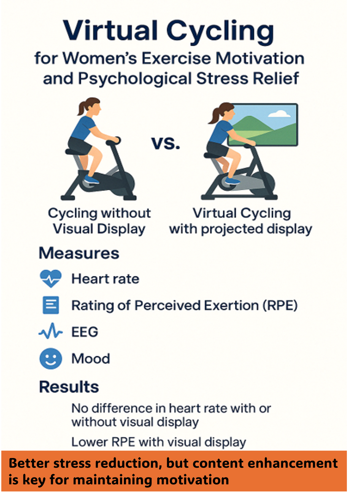

対象
健常な女子大学生を対象とした被験者内比較。
2024年度 公益財団法人JKA 補助事業 2024P-422
本事業では、女性の運動習慣形成を支援するため、実写映像付きバーチャルサイクリング環境と映像なし条件を比較し、心拍、主観的運動強度（RPE）、気分尺度、EEGから心理・生理反応を多面的に評価しました。

健常な女子大学生を対象とした被験者内比較。
バーチャルサイクリング映像あり／映像なし。
心拍数、RPE、TDMS-ST、EEG（集中・リラックス・ゾーン）。
映像の有無による心拍数の大きな差は認められませんでした。
RPEは映像あり条件で全時間帯において低い傾向を示しました。
映像あり条件で集中・リラックス・ゾーン指標が高い傾向を示し、心理指標からも映像コンテンツ設計の重要性が示唆されました。
JKA助成で構築した実験系と知見を、単年度で終わらせず、その後の学生研究・研究プロジェクトへ接続しています。